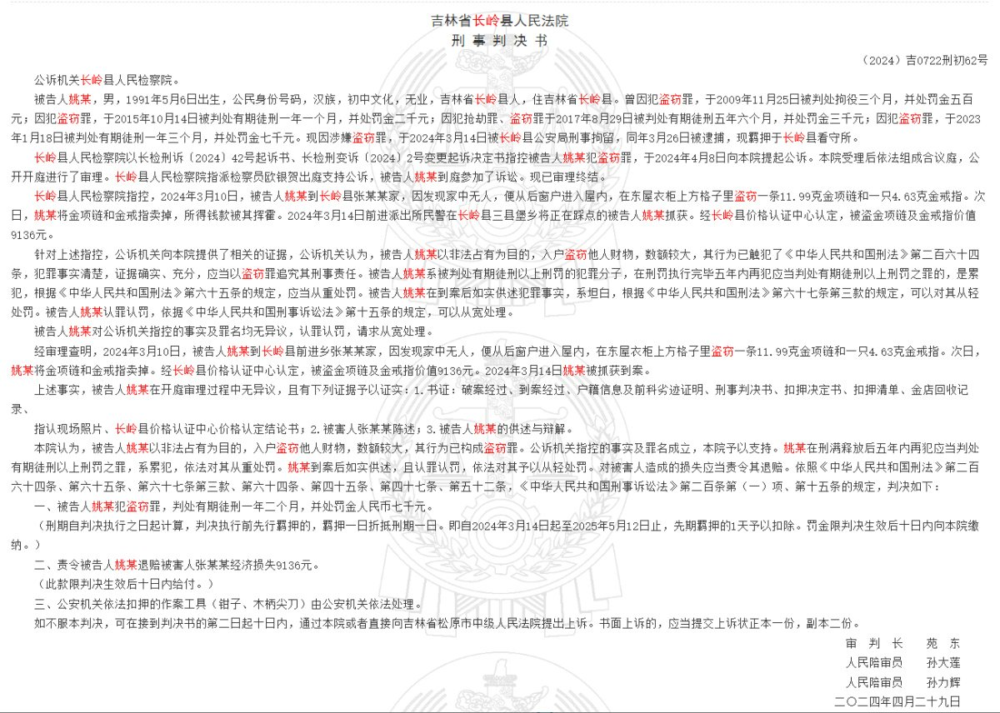

这个姚某第一次作案在2008年金融危机之后，其后六年间未曾犯案，直到2015年中国股灾后再犯，之后走上雪崩，（假设未减刑）刑满后半年再犯，再刑满又逢2023年起后新冠疫情时代经济衰落，更难有外部条件以更生，再犯，再刑满，再犯，再刑满，然后就到了今天的惨剧。
这是不是很能说明仓廪足而知礼节呢。

这是不是很能说明仓廪足而知礼节呢。

12月4日，据大河报报道，吉林松原恶性杀人案件嫌疑人曾五次入狱，半年前刚服刑完毕。据中国裁判文书网判决书显示，姚某5次入狱罪名包括盗窃罪、抢劫罪，今年5月服刑完毕。
犯罪记录如下：
1、2009年11月，因盗窃罪被判拘役3个月，罚金500元。 https://t.co/oUtUrbId8a https://t.co/LkOx6ndKPo
犯罪记录如下：
1、2009年11月，因盗窃罪被判拘役3个月，罚金500元。 https://t.co/oUtUrbId8a https://t.co/LkOx6ndKPo